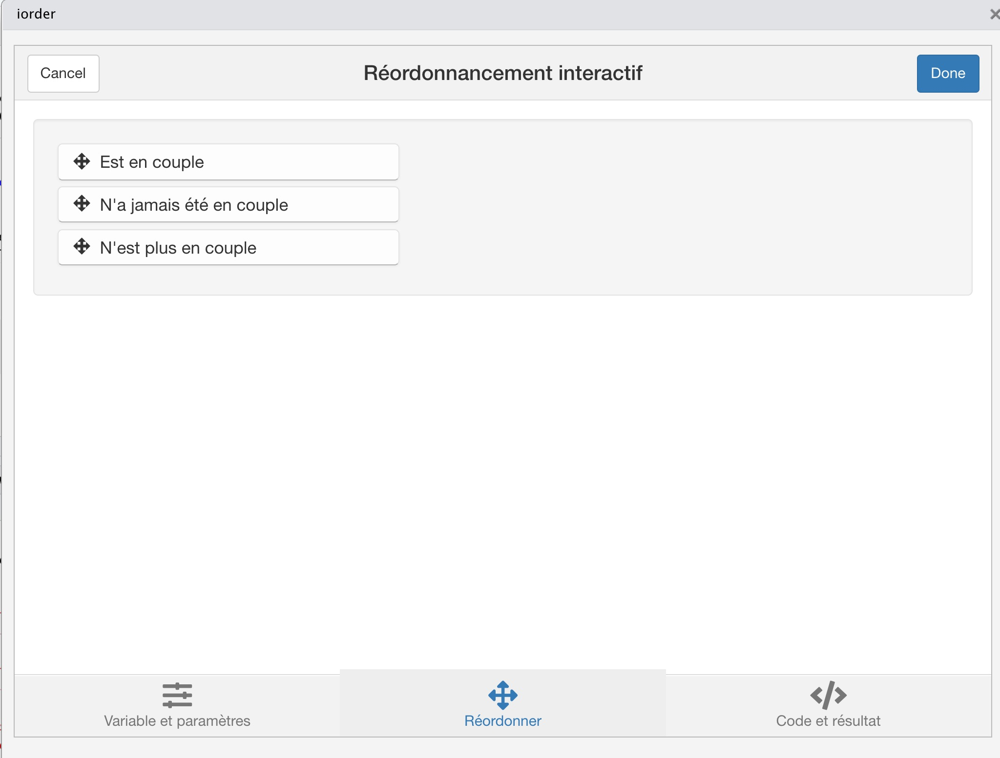
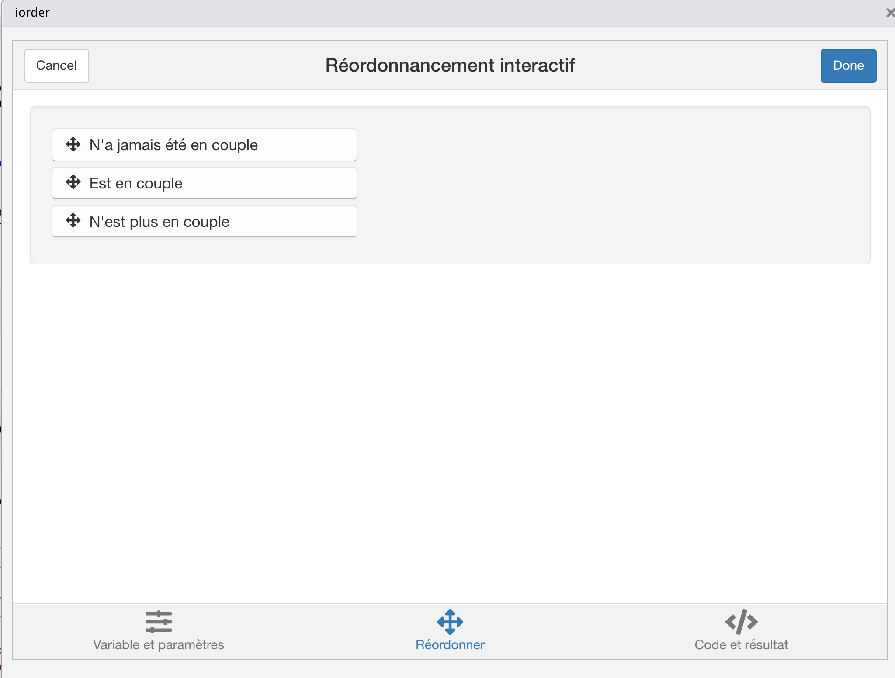

L’objet de ce cours est de donner une introduction à l’analyse d’enquête dans R en présentant de façon aussi simple que possible les outils de haut niveau mis au point récemment par des ingénieurs français pouur rendre pluus accessible les tâches de préparation des données, recodage, description, test et modélisation. Nous sommes à cet égard particulièrement redevable à deux auteurs, Julien Barnier et Joseph Larmarange qui ont crée ou contribué au développement de packages qui simplifient grandement le travail ainsi qu’à des sites pédagogiques d’exemples.
Notre contribution personnelle consiste principalement ici à implémenter leurs travaux sur un nouvel exemple d’application, celui des données de la World Value Survey dont nous avons extrait un échantillon composé de pays présents dans la vague la plus récente et dans une vague ancienne afin de pouvoir (1) suivre des évolutions à l’échelle d’une génération et (2) comparer des pays entre eux.
Importation des données
Chargement du fichier initial
Le fichier utilisé est composé de variables au format haven_labelled qui est un type bien adapté au stockage des données d’enquête mais est initialement plus difficile à comprendre que les formats habituellement utilisés dans R. Il suppose en effet le chargement du package labelledpour en exploiter toutes les possibilités. On trouvera tous les détails sur ce format dans la page que lui a consacré Joseph Larmarange :
A première vue le fichier n’est d’aspect pas très sympathique puisque les noms de colonnes ne permettent pas de deviner la variable (X001, X002, X003, …) et que le contenu est manifestement lui-même codé. Toutefois, si l’on regarde dans la fenêtre Environnement de R Studio, on voit qu’il y a beaucouo plus de renseignements.
Visualisation des noms des variables et des niveaux
Prenons à titre d’exemple la variable X007. Deux fonctions du package labelled permettent de connaître le nom de la variable (avec var_label) et celui de chacun de ses niveaux (avec val_labels) :
var_label(base$X007)
[1] "Marital status"
val_labels(base$X007)
Missing: Other Not asked
-5 -4
Not applicable No answer
-3 -2
Don't know Married
-1 1
Living together as married Divorced
2 3
Separated Widowed
4 5
Single/Never married
6
La variable en question était donc le statut matrimonial de la personne. Elle comporte 11 modalités correspondant soit à différentes formes de non-réponses (-5 à -1) soit à des réponses (1 à 6).
Les fonctions classiques de R-base ne permettent cependant pas de traiter directement la variable. Si on execute par exemple la fonction table() on obtient le dénombrement des modalités mais sans les labels des modalités.
Educational level respondent: ISCED 11 †one digit
X028
Employment status
X047R_WVS
Subjective income level (recoded in 3 groups)
X047_WVS
Scale of incomes
X049
Size of town
A008
Feeling of happiness
A170
Satisfaction with your life
C001
Jobs scarce: Men should have more right to a job than women (3 categories)
C002
Jobs scarce: Employers should give priority to (nation) people than immigrants (
D059
Men make better political leaders than women do
D060
University is more important for a boy than for a girl
E035
Income equality
E036
Private vs state ownership of business
F050
Believe in: God
F118
Justifiable: Homosexuality
F120
Justifiable: Abortion
F121
Justifiable: Divorce
On peut voir que notre extrait se compose à la fois de variables de cadrage (pays, date de l’enquête), de variables indépendantes explicatives (âge, sexe, revenu, …) et de variables dépendantes à expliquer (sentiment de bonheur, opinion sur les inégalités de revenu, statut des femmes dans la société, …)
Conversion des variables haven_labelled en factor
Pour faciliter les traitements statistiques dans R, il est préférable de revenir à un format plus standard qui est le type factor. La conversion n’est à première vue pas très compliquée mais elle peut conduire à des difficultés qui sont le plus souvent faciles à résoudre en utilisant le package questionr.
Dans les cas les plus simples, il suffit d’utiliser la fonction to_factor du package labelled. Comme on peut le voir-ci-dessous, la variable X007 (de type haven_labelled) est transformée en une variable marital (de type factor) sur laquelle on peut désormais appliquer les fonctions de R-base.
marital <-to_factor(base$X007)class(marital)
[1] "factor"
kable(table(marital))
marital
Freq
Missing: Other
33
Not asked
3029
Not applicable
0
No answer
286
Don’t know
82
Married
65538
Living together as married
6168
Divorced
3960
Separated
2150
Widowed
6182
Single/Never married
25219
Mais il peut arriver que la conversion aboutisse à un résultat non satisfaisant, par exemple dans le cas de la variable S003 qui donne le nom complet du pays d’enquête non seulement pour ceux qui sont présent dans le tableau mais dans tous les territoires, pays ou non, ayant servi de lieu d’enquête soit 239 possibilités :
pays <-to_factor(base$S003)nom_pays<-levels(pays)head(nom_pays,10)
Beaucoup de niveaux sont donc inutiles. On peut résoudre le problème en transformant la variable en caractère avant de la retransformer en factor. Le passage en caractère détruit en effet les niveaux inuutilisés.
nom_pays <-to_character(base$S003)class(nom_pays)
[1] "character"
nom_pays<-as.factor(nom_pays)class(nom_pays)
[1] "factor"
kable(table(nom_pays))
nom_pays
Freq
Argentina
2082
Australia
3861
Bangladesh
2725
Brazil
2905
Canada
5949
Chile
2000
China
4536
Colombia
7545
Egypt
4200
Germany
3554
Indonesia
4200
Iran
4031
Iraq
3525
Japan
2407
Jordan
2426
Kyrgyzstan
2243
Macau SAR
1023
Mexico
3249
New Zealand
2258
Nigeria
3233
North Macedonia
995
Pakistan
2728
Peru
2611
Philippines
2400
Puerto Rico
2291
Romania
2496
Russia
3850
Serbia
2326
Singapore
3524
South Korea
2494
Taiwan ROC
2003
Turkey
4322
Ukraine
4100
United States
4138
Vietnam
2200
Zimbabwe
2217
Une solution brutale …
Si on ne souhaite vraiment pas s’embarasser de difficultés, on peut procéder à la transformation simultanée de touutes les variables haven_labelled en variables de type factor. Puis on peut convertir le tableau en pur data.frame si on ne souhaite pas utiliser les propriétés du package tidyverse.
tb<-to_factor(base)class(tb)
[1] "tbl_df" "tbl" "data.frame"
df<-as.data.frame(tb)class(df)
[1] "data.frame"
Recodage et transformation des variables
Une fois importées les variables dans un format standard, plusieuurs opérations de recodage et de transformation vont être menées en amont de l’analyse statistique. Il est ici fortement recommandé d’utiliser le package questionr qui offre des outils simples et performants et évite de se plonger tout de suite dans des lignes de code très complexes. Le recodage des facteurs est en effet une opération cruciale mais difficile aussi bien sur le plan conceptuel que sur le plan technique.
https://juba.github.io/questionr/
Exemple de recodage manuel
Un cas fréquent de recodage est le fait de ne conserver que les réponses et de déclare en valeurs manquantes les non-réponses ou les refus de répondre. Considérons à titre d’exemple la question C001 qui porte sur la priorité à donner aux hommes plutôt qu’aux femmes lorsque le travail est rare et essayons de la croiser avec la variable X001 qui est le sexe de la personne enquêtée.
Y<-to_factor(base$C001)table(Y)
Y
Missing; Unknown Not asked in survey Not applicable No answer
42 3029 0 210
Don´t know Agree Disagree Neither
1246 45554 44378 18188
X<-to_factor(base$X001)table(X)
X
Missing; Unknown Not asked No answer Don´t know
25 0 28 29
Male Female
53891 58674
table(X,Y)
Y
X Missing; Unknown Not asked in survey Not applicable
Missing; Unknown 3 0 0
Not asked 0 0 0
No answer 0 0 0
Don´t know 0 0 0
Male 17 1501 0
Female 22 1528 0
Y
X No answer Don´t know Agree Disagree Neither
Missing; Unknown 0 1 4 13 4
Not asked 0 0 0 0 0
No answer 3 0 5 19 1
Don´t know 0 0 8 4 17
Male 94 511 24100 18463 9205
Female 113 734 21437 25879 8961
Si l’on veut procéder à une analyse statistique, il va être nécessaire de ne conserver que les personnes qui ont répodu à la question d’opinion et dont on connaît le sexe.
Un recodage “classique” dans R suppose une démarche assez laborieuse
pour Y
# Examen des niveaux de Ylevels(Y)
[1] "Missing; Unknown" "Not asked in survey" "Not applicable"
[4] "No answer" "Don´t know" "Agree"
[7] "Disagree" "Neither"
# Recodage de Ylevels(Y)<-c(NA,NA,NA,NA,NA,"D'accord","Pas d'accord","Ni l'un ni l'autre")# Dénombrement de Ytable(Y)
Y
D'accord Pas d'accord Ni l'un ni l'autre
45554 44378 18188
# Recodage de Xlevels(X)<-c(NA,NA,NA,NA,"Homme","Femme")# Dénombrement de Ytable(X)
X
Homme Femme
53891 58674
avant de pouvoir afficher le tableau de contingence et le pourcentage de réponses en ligne (avec la fonction lprop du package questionr)
tc <-table(X,Y)tc
Y
X D'accord Pas d'accord Ni l'un ni l'autre
Homme 24100 18463 9205
Femme 21437 25879 8961
lprop(tc)
Y
X D'accord Pas d'accord Ni l'un ni l'autre Total
Homme 46.6 35.7 17.8 100.0
Femme 38.1 46.0 15.9 100.0
Ensemble 42.1 41.0 16.8 100.0
On peut ensuite se demander si l’on veut réellement conserver les réponses “neutres” du type “ni l’un ni l’autre”. Si on pense qu’elles ne sont pas pertinentes, on va procéder à un nouveau recodage de Y
# Examen des niveaux de YY2<-Ylevels(Y2)
[1] "D'accord" "Pas d'accord" "Ni l'un ni l'autre"
# Recodage de Ylevels(Y2)<-c("D'accord","Pas d'accord",NA)# tableau de contingence XYtc2<-table(X,Y2)tc2
Y2
X D'accord Pas d'accord
Homme 24100 18463
Femme 21437 25879
lprop(tc2,1)
Y2
X D'accord Pas d'accord Total
Homme 56.6 43.4 100.0
Femme 45.3 54.7 100.0
Ensemble 50.7 49.3 100.0
Recodage des niveaux avec irec()
Prenons l’exemple de la variable X025A_01 qui donne le niveau scolaire du répondant selon la norme ISCED11. Si on lance la commande irec() appliquée à cette variable, on obtient une interface graphique indiquant les niveaux actuels de la variable :
include_graphics("img/irec_ex001.jpg")
On peut alors facilement les modifiers, par exemple en retirant les non-réponses et en regroupant les modalités en trois classes seulement :
include_graphics("img/irec_ex003.jpg")
Puis on récupère le code R permettant d’efectuer facilement l’opération
# Choix de la variablescol<-to_factor(base$X007)# Lancement de la fonction irec() - non exécutée ici #irec(scol)## Recodage de scol en scol_recscol_rec <-as.character(scol)scol_rec[scol =="Missing: Other"] <-NAscol_rec[scol =="Not asked"] <-NAscol_rec[scol =="Not applicable"] <-NAscol_rec[scol =="No answer"] <-NAscol_rec[scol =="Don't know"] <-NAscol_rec[scol =="Married"] <-"Est en couple"scol_rec[scol =="Living together as married"] <-"Est en couple"scol_rec[scol =="Divorced"] <-"N'est plus en couple"scol_rec[scol =="Separated"] <-"N'est plus en couple"scol_rec[scol =="Widowed"] <-"N'est plus en couple"scol_rec[scol =="Single/Never married"] <-"N'a jamais été en couple"# Résultattable(scol_rec)
scol_rec
Est en couple N'a jamais été en couple N'est plus en couple
71706 25219 12292
Ordre des niveaux avec iorder()
Dans l’exemple précédent, on peut considérer que l’ordre n’est pas tout à fait logique par rapport au cycle de vie et on voudrait inverser la position des niveaux 1 et 2. On peut le faire manuellement avec les fonctions de R-base mais il est aussi possible d’utiliser à nouveau une interface de questionr appelée iorder() qui afficche l’ordre actuel des niveaux :
include_graphics("img/iorder_ex001.jpg")

… et permet de les modifier facilement …
include_graphics("img/iorder_ex002.jpg")

… avant de récupérer le code R :
#iorder(scol_rec)## Réordonnancement de scol_recscol_rec <-factor(scol_rec,levels =c("N'a jamais été en couple", "Est en couple", "N'est plus en couple"))table(scol_rec)
scol_rec
N'a jamais été en couple Est en couple N'est plus en couple
25219 71706 12292
Récupération d’une variable quantitative
Supposons que nous souhaitions constituer des classes d’âge en découpant la variable X002. Une première difficulté vient du fait qu’il ne s’agit pas d’une variable purement quantitative du fait de la présence de modalités correspondant aux valeurs manquantes
On commence donc par transformer la variable en valeurs numériques en enchaînant une conversion en caractère puis en numérique.
N.B. : si on avait procédé à une conversion en factor puis en numérique on aurait abouti à un résultat différent et faux. Car ce qui aurait été converti en numérique aurait été l’ordre des facteurs et non pas les âges. Du coup la classe “18” qui correspond aux personnes âgées de 18 ans aurait été transformé en la valeur 9 puisque c’est la 9e modalité.
age<-as.numeric(to_character(base$X003))
Warning: NAs introduits lors de la conversion automatique
summary(age)
Min. 1st Qu. Median Mean 3rd Qu. Max. NA's
15.00 28.00 39.00 41.59 53.00 103.00 432
On peut récupérer de la même manière la variable correspondant à l’année de naissance c’est-à-dire la génération.
gen<-as.numeric(to_character(base$X002))
Warning: NAs introduits lors de la conversion automatique
summary(gen)
Min. 1st Qu. Median Mean 3rd Qu. Max. NA's
1901 1954 1967 1966 1979 2002 433
Découpage d’une variable quantitative en classes
La procédure normale est le découpage avec la fonction cut()de R-base. Par exemple pour faire des classes d’amplitudes égales :
Les classes obtenues peuvent être renommées si on leur donne une signification plus qualitative. Par exemple dans le cas des générations on pourrait faire quatre classes liées à l’histoire économoique et démographique.
#icut(gen)## Recodage de gen en gen_recgen4 <-cut(gen,include.lowest =TRUE,right =TRUE,dig.lab =4,breaks=c(1901,1944,1959,1974,2010))levels(gen4)<-c("Pre-Boomer (< 1945)","Boomer I (1945-1959)","Boomer II (1960-74)","Post-Boomer (> 1974)")table(gen4)
gen4
Pre-Boomer (< 1945) Boomer I (1945-1959) Boomer II (1960-74)
14116 24338 35307
Post-Boomer (> 1974)
38453
On peut aussi se faire aider par la fonction ìcut() du package questionR qui offre une interfacte visuelle très pratique.